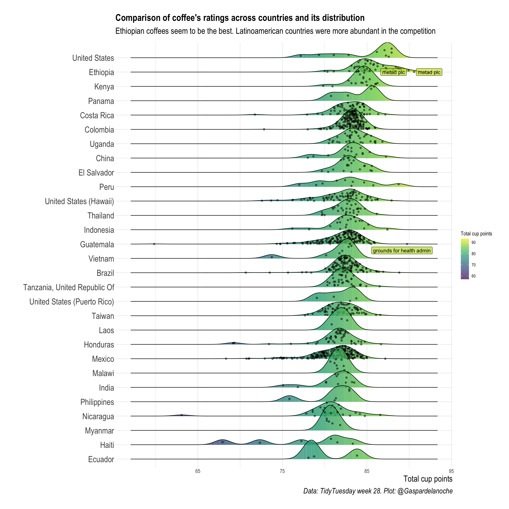

![]()
Introduction
This is my first Tidy Tuesday contribution and will be playing around a little bit with the coffee rating data.
As a coffee lover I felt that exploring a dataset about coffee was mandatory. The first question that came to me mind was: what is the best coffee and eventually, as looking a little bit deeper into dataset, which country has the best coffees.
I decided then to compare coffee ratings across countries and the associated density of cups rated. Among the main findings it shows that one Ethiopian coffee came to be the best ranked and also that this country’s coffees are the best ranked while Haitian coffees show one of the widest range of ratings. Colombian coffee display a moderately good ratings and a very narrow range.
Coffee rating distributions
coffee <- read_csv('https://raw.githubusercontent.com/rfordatascience/tidytuesday/master/data/2020/2020-07-07/coffee_ratings.csv')
head(coffee) |>
kable()| total_cup_points | species | owner | country_of_origin | farm_name | lot_number | mill | ico_number | company | altitude | region | producer | number_of_bags | bag_weight | in_country_partner | harvest_year | grading_date | owner_1 | variety | processing_method | aroma | flavor | aftertaste | acidity | body | balance | uniformity | clean_cup | sweetness | cupper_points | moisture | category_one_defects | quakers | color | category_two_defects | expiration | certification_body | certification_address | certification_contact | unit_of_measurement | altitude_low_meters | altitude_high_meters | altitude_mean_meters |
|---|---|---|---|---|---|---|---|---|---|---|---|---|---|---|---|---|---|---|---|---|---|---|---|---|---|---|---|---|---|---|---|---|---|---|---|---|---|---|---|---|---|---|
| 90.58 | Arabica | metad plc | Ethiopia | metad plc | NA | metad plc | 2014/2015 | metad agricultural developmet plc | 1950-2200 | guji-hambela | METAD PLC | 300 | 60 kg | METAD Agricultural Development plc | 2014 | April 4th, 2015 | metad plc | NA | Washed / Wet | 8.67 | 8.83 | 8.67 | 8.75 | 8.50 | 8.42 | 10 | 10 | 10 | 8.75 | 0.12 | 0 | 0 | Green | 0 | April 3rd, 2016 | METAD Agricultural Development plc | 309fcf77415a3661ae83e027f7e5f05dad786e44 | 19fef5a731de2db57d16da10287413f5f99bc2dd | m | 1950 | 2200 | 2075 |
| 89.92 | Arabica | metad plc | Ethiopia | metad plc | NA | metad plc | 2014/2015 | metad agricultural developmet plc | 1950-2200 | guji-hambela | METAD PLC | 300 | 60 kg | METAD Agricultural Development plc | 2014 | April 4th, 2015 | metad plc | Other | Washed / Wet | 8.75 | 8.67 | 8.50 | 8.58 | 8.42 | 8.42 | 10 | 10 | 10 | 8.58 | 0.12 | 0 | 0 | Green | 1 | April 3rd, 2016 | METAD Agricultural Development plc | 309fcf77415a3661ae83e027f7e5f05dad786e44 | 19fef5a731de2db57d16da10287413f5f99bc2dd | m | 1950 | 2200 | 2075 |
| 89.75 | Arabica | grounds for health admin | Guatemala | san marcos barrancas “san cristobal cuch | NA | NA | NA | NA | 1600 - 1800 m | NA | NA | 5 | 1 | Specialty Coffee Association | NA | May 31st, 2010 | Grounds for Health Admin | Bourbon | NA | 8.42 | 8.50 | 8.42 | 8.42 | 8.33 | 8.42 | 10 | 10 | 10 | 9.25 | 0.00 | 0 | 0 | NA | 0 | May 31st, 2011 | Specialty Coffee Association | 36d0d00a3724338ba7937c52a378d085f2172daa | 0878a7d4b9d35ddbf0fe2ce69a2062cceb45a660 | m | 1600 | 1800 | 1700 |
| 89.00 | Arabica | yidnekachew dabessa | Ethiopia | yidnekachew dabessa coffee plantation | NA | wolensu | NA | yidnekachew debessa coffee plantation | 1800-2200 | oromia | Yidnekachew Dabessa Coffee Plantation | 320 | 60 kg | METAD Agricultural Development plc | 2014 | March 26th, 2015 | Yidnekachew Dabessa | NA | Natural / Dry | 8.17 | 8.58 | 8.42 | 8.42 | 8.50 | 8.25 | 10 | 10 | 10 | 8.67 | 0.11 | 0 | 0 | Green | 2 | March 25th, 2016 | METAD Agricultural Development plc | 309fcf77415a3661ae83e027f7e5f05dad786e44 | 19fef5a731de2db57d16da10287413f5f99bc2dd | m | 1800 | 2200 | 2000 |
| 88.83 | Arabica | metad plc | Ethiopia | metad plc | NA | metad plc | 2014/2015 | metad agricultural developmet plc | 1950-2200 | guji-hambela | METAD PLC | 300 | 60 kg | METAD Agricultural Development plc | 2014 | April 4th, 2015 | metad plc | Other | Washed / Wet | 8.25 | 8.50 | 8.25 | 8.50 | 8.42 | 8.33 | 10 | 10 | 10 | 8.58 | 0.12 | 0 | 0 | Green | 2 | April 3rd, 2016 | METAD Agricultural Development plc | 309fcf77415a3661ae83e027f7e5f05dad786e44 | 19fef5a731de2db57d16da10287413f5f99bc2dd | m | 1950 | 2200 | 2075 |
| 88.83 | Arabica | ji-ae ahn | Brazil | NA | NA | NA | NA | NA | NA | NA | NA | 100 | 30 kg | Specialty Coffee Institute of Asia | 2013 | September 3rd, 2013 | Ji-Ae Ahn | NA | Natural / Dry | 8.58 | 8.42 | 8.42 | 8.50 | 8.25 | 8.33 | 10 | 10 | 10 | 8.33 | 0.11 | 0 | 0 | Bluish-Green | 1 | September 3rd, 2014 | Specialty Coffee Institute of Asia | 726e4891cf2c9a4848768bd34b668124d12c4224 | b70da261fcc84831e3e9620c30a8701540abc200 | m | NA | NA | NA |
coffee |>
drop_na(any_of("country_of_origin")) |>
filter(aroma != 0 & !country_of_origin %in% c("Zambia", "Rwanda", "Papua New Guinea", "Japan", "Mauritius", "Cote d?Ivoire", "Burundi")) |>
mutate(country_of_origin = fct_reorder(country_of_origin, total_cup_points)) |>
ggplot(aes(x = total_cup_points, y = country_of_origin, fill = stat(x), label = owner)) +
geom_density_ridges_gradient(show.legend = T, alpha = .5, point_alpha = 0.5, jittered_points = TRUE) +
theme_ipsum() +
scale_fill_viridis_c(alpha = 0.7) +
ylab("") +
xlab("Total cup points") +
labs(
title = "Comparison of coffee's ratings across countries and its distribution",
subtitle = "Ethiopian coffees seem to be the best. Latinoamerican countries were more abundant in the competition",
caption = "Data: TidyTuesday week 28. Plot: @Gaspardelanoche",
fill = "Total cup points"
) +
theme(
plot.title = element_text(size = 20, face = "bold"),
plot.subtitle = element_text(size = 18),
axis.title.x = element_text(size = 18),
axis.title.y = element_text(size = 18),
axis.text.y = element_text(size = 18),
plot.caption = element_text(size = 16)
) +
geom_label_repel(
data = subset(coffee, total_cup_points > 89),
force = 10,
xlim = c(85, NA)
)Picking joint bandwidth of 0.919
Citation
BibTeX citation:
@misc{garcía-botero2020,
author = {Camilo García-Botero},
editor = {},
title = {What’s the Best Coffee?},
date = {2020-07-20},
url = {https://camilogarciabotero.github.io/biocomp/blog},
langid = {en}
}
For attribution, please cite this work as:
Camilo García-Botero. 2020. “What’s the Best Coffee?” https://camilogarciabotero.github.io/biocomp/blog.